Maurits Evers (maurits.evers@anu.edu.au)
Version 1.0, August 2019
drcIt [the IC50 (inhibitory concentration 50)] is the concentration required to bring the curve down to point halfway between the top and bottom plateaus of the curve. This definition is the one upon which classical pharmacological analysis of agonist and antagonist interactions is based.
[Relative vs. absolute IC50 - FAQ 1566 - GraphPad]
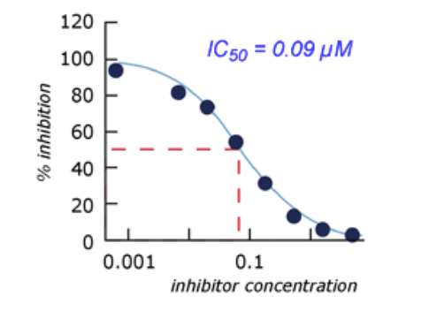
[Fundamentals of Drug Discovery, Lecture 1, The University of Manchester]
We use a parametric model to describe the dose response; fitting such a model to observed/measured data allows us to estimate model parameters.
Amongst the most common models to characterise the dose response are
the 3-parameter log-logistic model
In biochemistry/pharmacology/toxicology, is also known as the Hill equation.
the 4-parameter log-logistic model
The 4-parameter log-logistic model has the following sigmoidal shape:
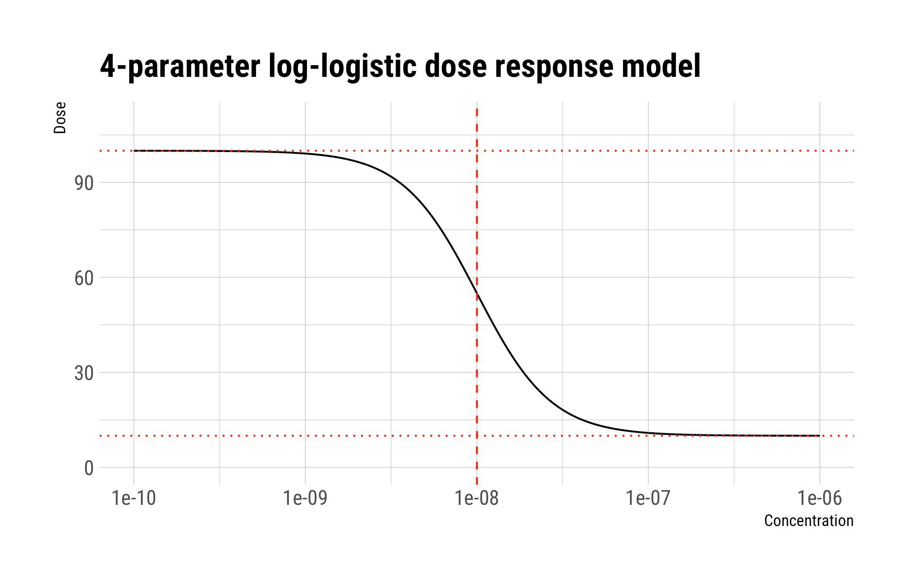
The dotted horizontal lines denote the asymptotic responses for very low (top left) and very high (bottom right) concentrations. The vertical dashed line gives the IC50 concentration.
1234567891011121314151617
LL4 <- function(x, c = 10, d = 100, b = 2, e = 1e-8)
c + (d - c) / (1 + exp(b * log(x / e)))
require(tidyverse)
require(hrbrthemes)
data.frame(
Concentration = 10^seq(-10, -6, length.out = 10^4)) %>%
mutate(Dose = LL4(Concentration)) %>%
ggplot(aes(Concentration, Dose)) +
geom_line() +
scale_x_continuous(trans = "log10") +
theme_ipsum_rc() +
geom_hline(yintercept = 10, linetype = 3, colour = "red") +
geom_hline(yintercept = 100, linetype = 3, colour = "red") +
geom_vline(xintercept = 1e-8, linetype = 2, colour = "red") +
coord_cartesian(y = c(0, 110)) +
labs(title = "4-parameter log-logistic dose response model")
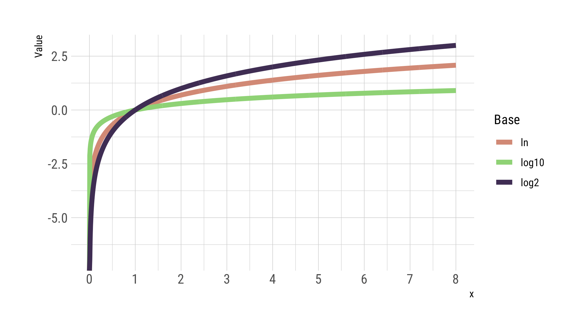
For very low concentrations
For very high concentrations
So the difference between and is that in the 4-parameter model we allow for an arbitrary upper and lower baseline response.
If you have reason to believe (or have observed) that the response does not go down to zero for very high concentrations, a 4-parameter model may be more appropriate to describe the observed dose response.
is the slope parameter determining the “steepness” of the sigmoidal shape; in GraphPad’s Prism is often referred to as the Hill slope.
is the asymptotic baseline response at very high concentrations
is the asymptotic baseline response at very low concentrations
is the IC50 concentration
To confirm: What is the concentration necessary to reduce the “no-dose” effect to 50%?
For the 4-parameter model
Once we have fitted the model to the data, we can simply calculate other IC concentrations.
Generally, to get the IC100α we have
Solve for IC100α:
So any IC100α value can be expressed in terms of the IC50 value and the slope parameter .
Formally, to get an estimate of the uncertainty of IC100α we would e.g. fit the model to the data within a Bayesian framework which gives the full posterior distribution for all parameters. The distribution of IC100α (and thereby the uncertainty) follows then directly from .
Alternatively, we can use the laws for the propagation of uncertainty to get an estimate of the uncertainty in
For example, to get the IC90 we’d do
Double-check IC50:
It is important to recognise that the (relative) uncertainty in IC100α values increases with increasing |α - 0.5|. In other words, the further we move away from the halfway point, the larger the uncertainty becomes in estimating the required dose to achieve the desired inhibition. For example, an IC90 or IC10 dose estimate will have a much larger uncertainty than an IC50 value.
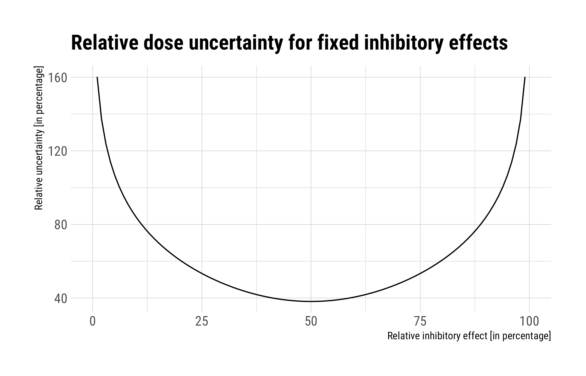
1234567891011121314151617181920212223242526272829303132
require(drc)
m <- drm(
Response ~ Concentration,
data = df %>%
gather(Primer, Response, -Concentration) %>%
filter(str_detect(Primer, "^ITS")), fct = LL.4())
IC100alpha <- function(LL4_fit, alpha = 0.9) {
coef <- summary(LL4_fit)$coef
fct <- (alpha / (1 - alpha)) ^ (1 / coef[1, 1])
x <- coef[4, 1] * fct
dx1 <- fct ^ 2 * coef[4, 2]^2
dx2 <- (coef[4, 1] * log(alpha / (1 - alpha)) * fct / coef[1, 1]^2) ^ 2 * coef[1, 2]^2
list(Estimate = x, `Std. Error` = sqrt(dx1 + dx2))
}
require(tidyverse)
require(hrbrthemes)
map_dfr(
setNames(seq(0, 1, length.out = 100), seq(0, 1, length.out = 100) * 100),
~as.data.frame(IC100alpha(m, .x)), .id = "alpha") %>%
mutate(
alpha = as.numeric(alpha),
relative_uncertainty = `Std..Error` / Estimate * 100) %>%
ggplot(aes(alpha, relative_uncertainty)) +
geom_line() +
theme_ipsum_rc() +
labs(
y = "Relative uncertainty [in percentage]",
x = "Relative inhibitory effect [in percentage]",
title = "Relative dose uncertainty for fixed inhibitory effects")
Transcription of three human genomic regions was measured in triplicates using qPCR following treatment with CX-5461 at different doses.
Primers for the three genomic regions are located within the
CX-5461 concentrations range from 10 nM to 10 μM.
The response values denote 2^ΔCt values, i.e. raw Ct values per sample were normalised to the housekeeping gene.
| Concentration | ETS_1 | ETS_2 | ETS_3 | ITS_1 | ITS_2 | ITS_3 | MYC_1 | MYC_2 | MYC_3 |
|---|---|---|---|---|---|---|---|---|---|
| 0 | 15.119023 | 17.247422 | 10.398624 | 69.92512 | 102.08654 | 64.08204 | 1.5338556 | 2.2375480 | 1.8834949 |
| 10 | 15.494393 | 14.444988 | 11.816078 | 89.58384 | 78.80247 | 63.66657 | 1.5580216 | 1.4765118 | 0.9717045 |
| 30 | 10.895076 | 11.577629 | 13.448812 | 64.53529 | 79.18680 | 78.52178 | 1.2947598 | 0.9714232 | 1.4341756 |
| 100 | 9.967332 | 9.955150 | 9.781103 | 71.93372 | 54.64323 | 65.36459 | 1.1731587 | 1.4117496 | 1.1379714 |
| 300 | 5.477878 | 6.983136 | 5.615068 | 33.27032 | 52.05233 | 39.26998 | 0.9647971 | 1.1252713 | 1.2412833 |
| 1000 | 3.790405 | 4.789181 | 4.206689 | 32.55994 | 32.85832 | 21.32608 | 0.8994260 | 1.0645096 | 0.9539767 |
| 10000 | 1.611048 | 1.255245 | 2.054009 | 13.92022 | 14.21940 | 15.85316 | 0.6949179 | 0.7672686 | 1.0321075 |
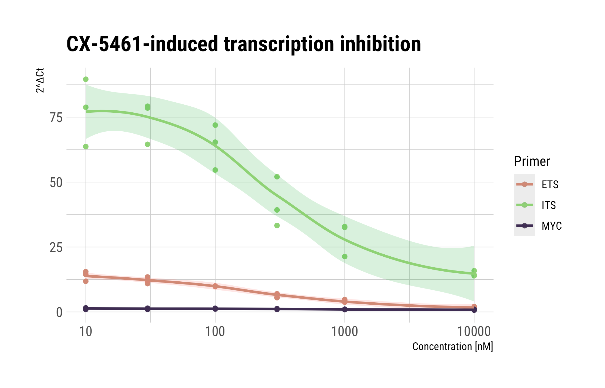
1234567891011121314151617181920212223242526
df <- read.table(text = "Concentration ETS_1 ETS_2 ETS_3 ITS_1 ITS_2 ITS_3 MYC_1 MYC_2 MYC_3
0 15.11902289 17.24742154 10.39862373 69.92512161 102.0865388 64.08204224 1.533855635 2.237548013 1.883494857
10 15.49439283 14.44498801 11.81607752 89.58383667 78.8024725 63.66656685 1.558021557 1.476511831 0.971704499
30 10.89507577 11.57762939 13.44881183 64.53528609 79.1867988 78.52178462 1.2947598 0.971423198 1.434175632
100 9.967331673 9.955149896 9.781102566 71.93371795 54.6432258 65.36459359 1.173158692 1.411749585 1.137971408
300 5.47787785 6.983135513 5.615068369 33.27031886 52.05233385 39.26997687 0.964797117 1.125271264 1.241283306
1000 3.790404554 4.789181051 4.206689227 32.55994419 32.85832485 21.32608099 0.899425951 1.064509615 0.953976683
10000 1.611048275 1.255244669 2.054009155 13.92022295 14.2193953 15.85315577 0.694917949 0.767268575 1.032107513", header = T)
require(tidyverse)
require(hrbrthemes)
df %>%
gather(Primer, Response, -Concentration) %>%
filter(Concentration > 0) %>%
mutate(Primer = str_replace(Primer, "_\\d$", "")) %>%
ggplot(aes(Concentration, Response, colour = Primer, fill = Primer)) +
geom_point() +
theme_ipsum_rc() +
scale_colour_ipsum() +
scale_x_continuous(trans = "log10") +
geom_smooth(method = "loess", alpha = 0.2) +
guides(fill = FALSE) +
labs(
x = "Concentration [nM]",
y = "2^ΔCt",
title = "CX-5461-induced transcription inhibition")
drcWe need data in “long” format. Then to generally fit a 4-parameter log-logistic model we’d do
1234
m <- drc(
Response ~ Concentration,
data = df,
fct = LL.4())
Here Response ~ Concentration specifies that we want to model data in the Response column as a function of the doses in the Concentration column. Data is given in data.frame df. fct = LL.4() specifies that we want to use a 4-parameter log-logistic model.
For example to fit the model to the ITS data
1234567891011121314151617
library(drm)
m <- drm(
Response ~ Concentration,
data = df %>%
gather(Key, Response, -Concentration) %>%
filter(str_detect(Key, "^ITS")),
fct = LL.4())
m
#
#A 'drc' model.
#
#Call:
#drm(formula = Response ~ Concentration, data = df %>% gather(Key, Response, -Concentration) %>% filter(str_detect(Key, "^ITS")), fct = LL.4())
#
#Coefficients:
#b:(Intercept) c:(Intercept) d:(Intercept) e:(Intercept)
# 1.099 14.494 79.246 259.101
The estimate for the IC50 is then
123
summary(m)$coef[4, ]
# Estimate Std. Error t-value #p-value
#259.10130242 98.82048683 2.62193914 0.01785052
To fit models to all groups:
123456789101112131415161718192021222324252627
df %>%
gather(Key, Response, -Concentration) %>%
mutate(Key = str_replace(Key, "_\\d$", "")) %>%
group_by(Key) %>%
nest() %>%
mutate(
fit = map(data, ~drm(Response ~ Concentration, data = .x, fct = LL.4())),
coef = map(fit, ~summary(.x)$coefficients %>%
as.data.frame() %>%
rownames_to_column("Parameter"))) %>%
transmute(Key, coef) %>%
unnest()
## A tibble: 12 x 6
# Key Parameter Estimate `Std. Error` `t-value` `p-value`
#
# 1 ETS b:(Intercept) 0.890 0.235 3.79 1.47e- 3
# 2 ETS c:(Intercept) 1.46 1.15 1.27 2.21e- 1
# 3 ETS d:(Intercept) 14.4 0.779 18.6 1.02e-12
# 4 ETS e:(Intercept) 180. 63.4 2.85 1.12e- 2
# 5 ITS b:(Intercept) 1.10 0.410 2.68 1.58e- 2
# 6 ITS c:(Intercept) 14.5 7.32 1.98 6.40e- 2
# 7 ITS d:(Intercept) 79.2 4.53 17.5 2.68e-12
# 8 ITS e:(Intercept) 259. 98.8 2.62 1.79e- 2
# 9 MYC b:(Intercept) 0.213 0.139 1.53 1.44e- 1
#10 MYC c:(Intercept) 0.430 0.668 0.643 5.29e- 1
#11 MYC d:(Intercept) 1.89 0.121 15.6 1.63e-11
#12 MYC e:(Intercept) 126. 568. 0.222 8.27e- 1
File → New → New Data Table and Graph
Copy and paste data
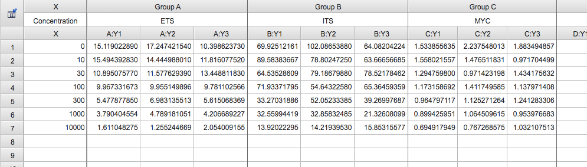
Analyse → XY analyses → Nonlinear regression (curve fit)
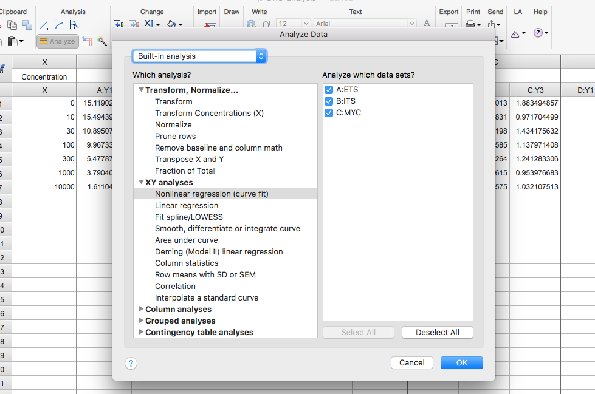
Dose-response - Inhibition → [Inhibitor] vs. response – Variable slope (four parameters)
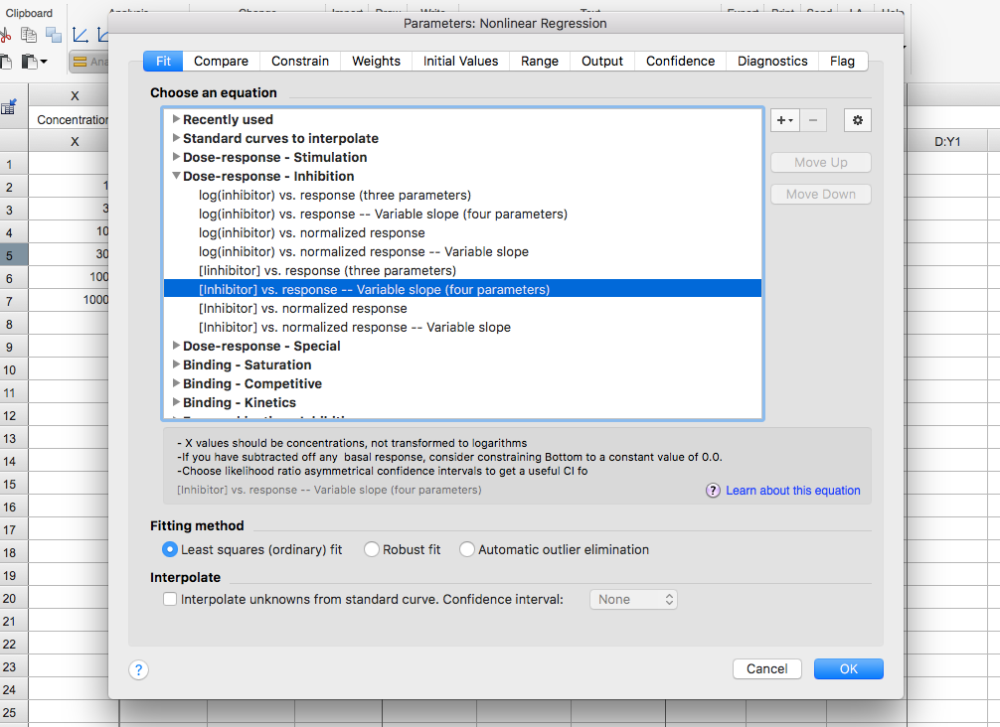
Inspect results
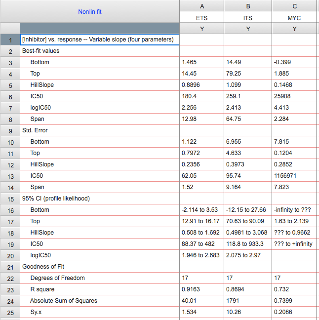
In terms of the model there is no difference. Both can be (both in Prism and R) modelled using a 3-parameter of 4-parameter log-logistic model. The only difference is the sign of the slope parameter and the interpretation of the parameters.
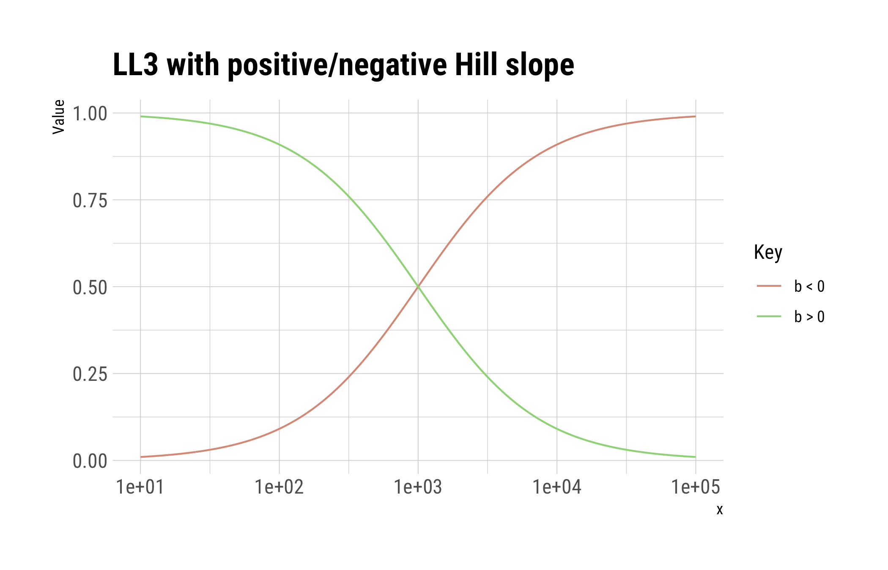
12345678910111213141516
LL3 <- function(x, b = 1, d = 1, e = 1000)
d / (1 + (x / e) ^ b)
require(tidyverse)
require(hrbrthemes)
data.frame(x = 10^seq(1, 5, length.out = 1000)) %>%
mutate(
`b > 0` = LL3(x),
`b < 0` = LL3(x, b = -1)) %>%
gather(Key, Value, -x) %>%
ggplot(aes(x, Value, colour = Key)) +
geom_line() +
theme_ipsum_rc() +
scale_colour_ipsum() +
scale_x_continuous(trans = "log10") +
labs(title = "LL3 with positive/negative Hill slope")
The IC50 characterises the dose giving 50% inhibition while the EC50 describes the dose giving 50% efficacy.
In other words, the inhibitory dose is based on the inhibitory effect from the upper baseline response. The effective dose is the dose giving a specific effect from the bottom baseline response. So an IC10 is the dose that reduces the maximal baseline response by 10%. An EC10 is the dose that leads to an increase in the minimal baseline response by 10%.
GraphPad Curve Fitting Guide: Pros and cons of normalizing the data
Bottom line: There exists no one-size-fits-all answer!
In the absence of replicate replicate measurements, fitting a model to series of dose response measurements with or without vehicle normalisation will lead to exactly the same IC50 estimates (but different slope and asymptotic baseline parameters due to the different scales).
If there are replicate dose response measurements, vehicle normalisation may account for batch effects between the replicate measurements; fitting two models once with and once without normalisation will provide inside into across replicate variability.
No, fitting a (any) model to averaged data is never a good idea. Instead, include replicate data as-is, and set up the model to account for replicate measurements. This can be done e.g. in Prism when importing new data:
File → New → New Data Table and Graph
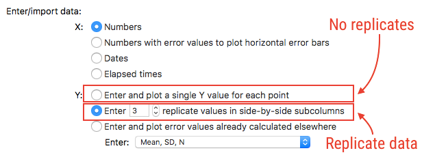
If measurements show evidence of a biphasic dose response, things are more complicated; even if a 3/4-parameter log-logistic model can be fitted to the data, estimated parameters (IC50, etc.) will/may not be meaningful.
Examples of biphasic dose response curves:
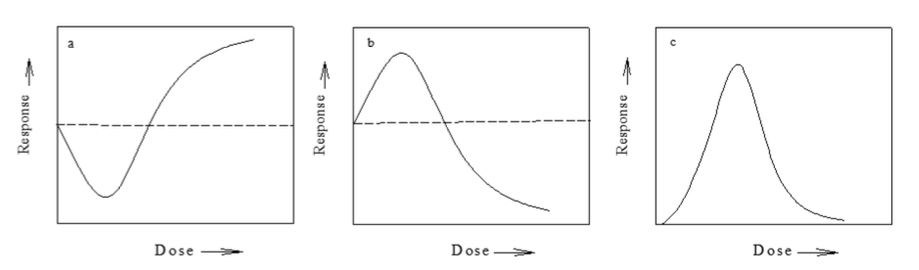
[Nweke and Ogbonna, Statistical models for biphasic dose-response relationships (hormesis) in toxicological studies, Ecotoxicol. Environ. Contam., 12, 39-55 (2017)]
That’s one of the key questions, and can be tricky to address.
A somewhat hand-wavy but hopefully intuitive answer would be to choose concentrations such that
A more rigorous (and mathematical) answer involves the concepts of statistical optimal design theory. Without going into any details, optimal design theory allows us to find an optimal set of concentrations that will give us the “best” estimates of our model parameters. The idea here is to try and spread out the doses such that a resulting fit leads to minimal uncertainties in the model parameters.
In no particular order and far from being complete/comprehensive: